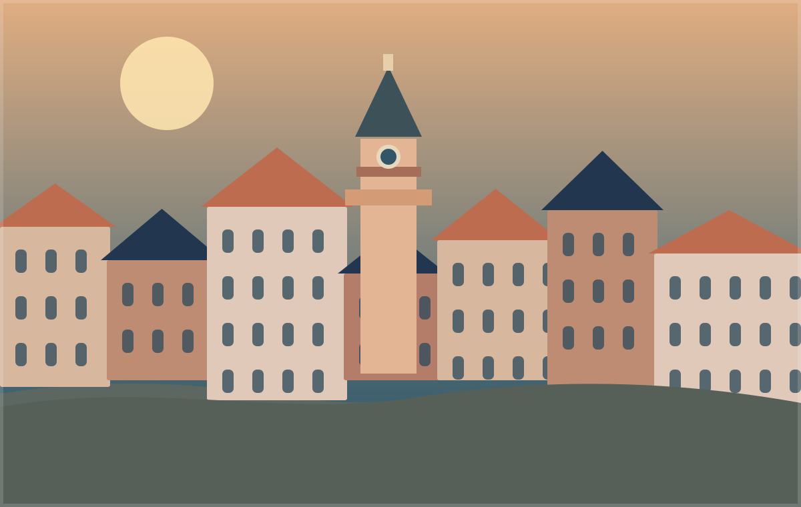
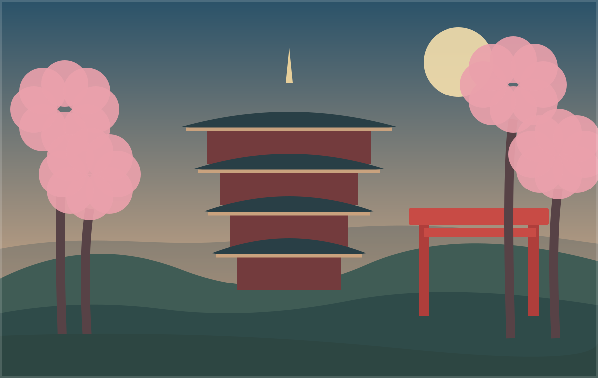
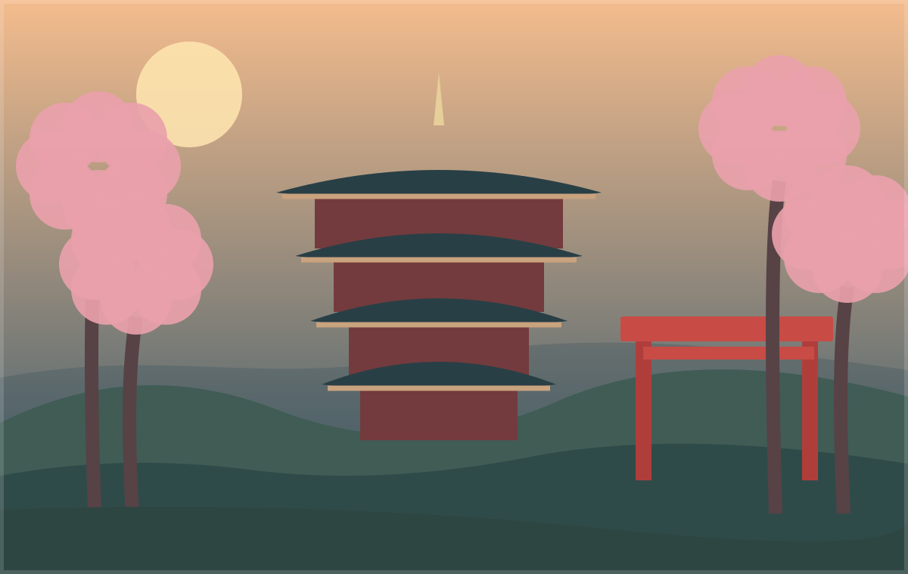
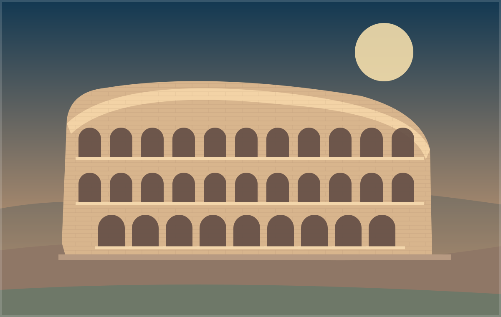
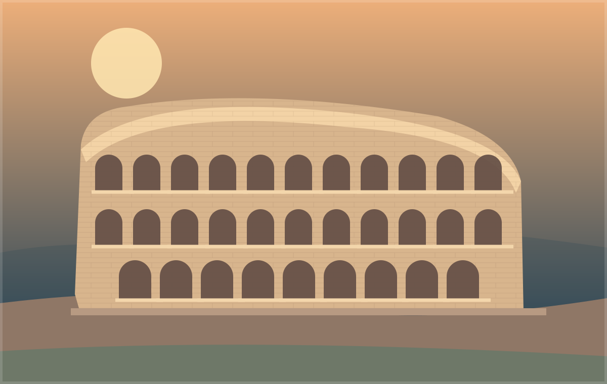

Шість митей із трьох міст
Авторські ілюстрації демонструють галерею з підписами, альтернативним текстом і адаптивною сіткою.

Львів · Старе містоВечірні дахи та вулички нагадують про історії на кожному кроці. 
Львів · Теплі кольориМісто змінює настрій разом зі світлом і погодою. 
Кіото · Храмова тишаТрадиційна архітектура і кольори японських садів. 
Кіото · Інший ракурсЗнайомі силуети в новому світлі. 
Рим · Спадщина античностіКолізей як символ багатовікової історії міста. 
Рим · Золота годинаТеплі відтінки середземноморського вечора.
Зображення створені як навчальні SVG-ілюстрації, а не як документальні фотографії реальних подорожей.